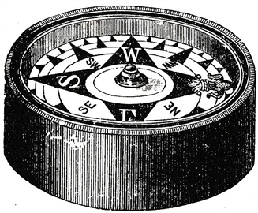

VOTRE SEANCE
"L'hypnose est un moyen de communiquer des idées ; c'est un moyen de demander aux gens d'accepter des idées pour les examiner, c'est un moyen de découvrir les significations intrinsèques et de décider alors d'agir ou de ne pas agir selon ces significations particulières. " Milton ERICKSON
L'hypnose est un état psychologique revêtant certains attributs physiologiques et marqué par le fonctionnement inconscient de l'individu à un niveau d'attention autre que l'état de conscience dit ordinaire. L'hypnose Ericksonienne est, autre qu'un regard stratégique dans la communication, avant tout une pratique, un outil mis ici au service de la thérapie. Ainsi, elle peut s'intégrer facilement à toute autre approche psychothérapique (T.C.C., transpersonelle, psychanalytique, systémique, etc).
L’hypnose est considérée comme un facilitateur, un amplificateur et un accélérateur de thérapie. C'est un moyen d'accéder aux ressources inconscientes, de contourner les freinations, les blocages souvent conscients et de permettre ainsi l'émergence de nouvelles réponses cognitivo-comportementales plus adaptées, plus créatives pour la vie du sujet.
Comment se déroule une séance ?
Il n'y a pas de séance type mais généralement la séance commence par un échange ciblé et strucuré afin de déterminer l'objectif de travail. Cela défini, et tout en restant dans une dimension de communication verbale, s'amorce ce qui va être l'induction hypnotique. Vient ensuite la phase dite de "transe". Pendant cette phase spécifique, vous explorez vos ressources inconscientes et favorisez des changements en modulant vos schémas habituels de fonctionnement. Pour cela, j'utilise des techniques et protocoles propres au courant Ericksonien. Pendant le travail hypnotique, vous restez "consciemment présent". Une dernière phase se consacre à un temps d’échange sur l’expérience vécue
Pour quelle(s) indication(s) ?
L’hypnose est considérée comme un facilitateur, un amplificateur et un accélérateur de thérapie. C'est un moyen d'accéder aux ressources inconscientes, de contourner les freinations, les blocages souvent conscients et de permettre ainsi l'émergence de nouvelles réponses cognitivo-comportementales plus adaptées, plus créatives pour la vie du sujet.
Comment se déroule une séance ?
Il n'y a pas de séance type mais généralement la séance commence par un échange ciblé et strucuré afin de déterminer l'objectif de travail. Cela défini, et tout en restant dans une dimension de communication verbale, s'amorce ce qui va être l'induction hypnotique. Vient ensuite la phase dite de "transe". Pendant cette phase spécifique, vous explorez vos ressources inconscientes et favorisez des changements en modulant vos schémas habituels de fonctionnement. Pour cela, j'utilise des techniques et protocoles propres au courant Ericksonien. Pendant le travail hypnotique, vous restez "consciemment présent". Une dernière phase se consacre à un temps d’échange sur l’expérience vécue
Pour quelle(s) indication(s) ?

L’après séance :
Parce que certains objectifs de séances sont plurifactoriels, je me permets de prendre de vos nouvelles quelques jours après la séance. Cela me permet de pouvoir jauger de la qualité du changement ou de quelconques facteurs qui méritent d’être considérés pour les séances à suivre, si besoin.
Combien de séances faut-il ?
Le nombre est très variable d'un individu à l’autre et en fonction de la problématique abordée. Il n’y a pas de nombre de séances préétabli en fonction d’un objectif. L'hypnose Ericksonienne étant une thérapie brève, cela se situe généralement entre une à cinq séances, sur une durée de quelques semaines à quelques mois.
L'hypnose est une approche technique et non magique ce qui fait que votre motivation et votre implication sont les ingrédients primordiaux afin d'optimiser la réussite de votre séance.
Parce que certains objectifs de séances sont plurifactoriels, je me permets de prendre de vos nouvelles quelques jours après la séance. Cela me permet de pouvoir jauger de la qualité du changement ou de quelconques facteurs qui méritent d’être considérés pour les séances à suivre, si besoin.
Combien de séances faut-il ?
Le nombre est très variable d'un individu à l’autre et en fonction de la problématique abordée. Il n’y a pas de nombre de séances préétabli en fonction d’un objectif. L'hypnose Ericksonienne étant une thérapie brève, cela se situe généralement entre une à cinq séances, sur une durée de quelques semaines à quelques mois.
L'hypnose est une approche technique et non magique ce qui fait que votre motivation et votre implication sont les ingrédients primordiaux afin d'optimiser la réussite de votre séance.
EN RELATION
INFOS RDV
formulaire CONTACT
INCONSCIENT
MILTON ERICKSON
TRANSE